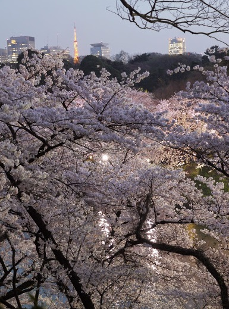

千鳥ヶ淵 四季→春 エリア→東京東部

このスポットには
千鳥ヶ淵緑道は、皇居西側の千鳥ヶ淵に沿う全長約700ｍの遊歩道で、千鳥ヶ淵戦没者墓苑入口から靖国通りまで伸びています。千鳥ヶ淵緑道のソメイヨシノやオオシマザクラなど約260本の桜は遊歩道を歩く人の頭上に咲き、まるで桜のトンネルの中を歩いているような体験ができる、全国的にも有名な桜の名所です。観桜期には、日本全国から100万人以上の人が訪れます。（http://kanko-chiyoda.jp/tabid/1117/Default.aspx より抜粋）
このスポットには
こんな歴史が・・・
元々は初期の江戸の飲料水確保のために造成された淵。江戸城拡張の際、局沢川と呼ばれていた川を半蔵門と田安門の土橋で塞き止めて造られた。
所在地
東京都千代田区九段南二丁目から三番町先
最寄り駅
東京メトロ半蔵門線・東西線・都営三田線・新宿線 九段下駅